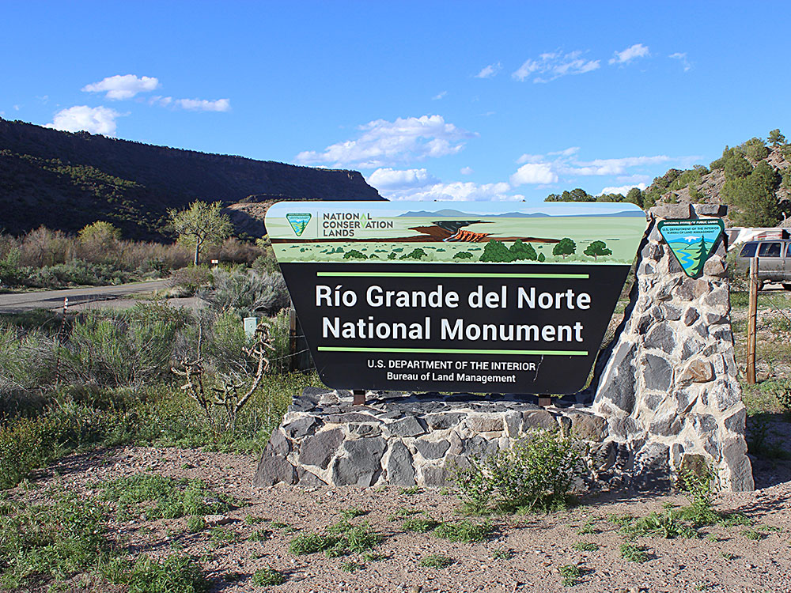
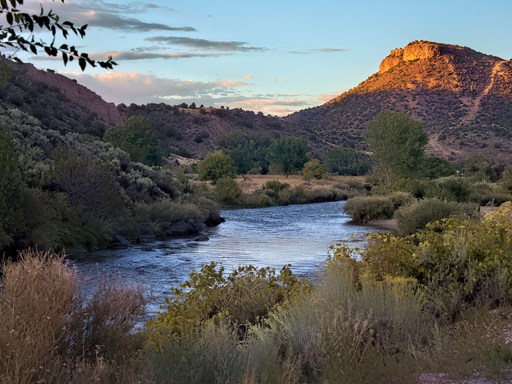
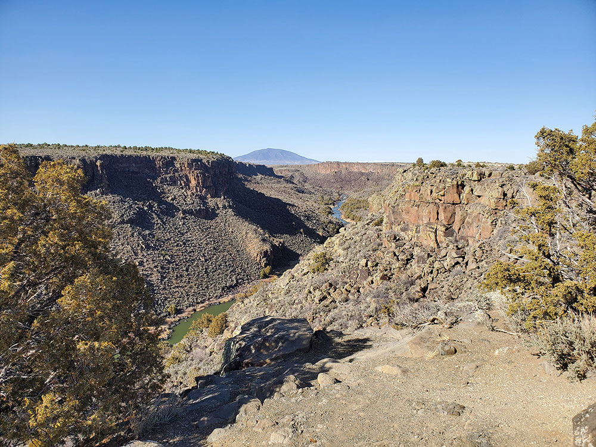
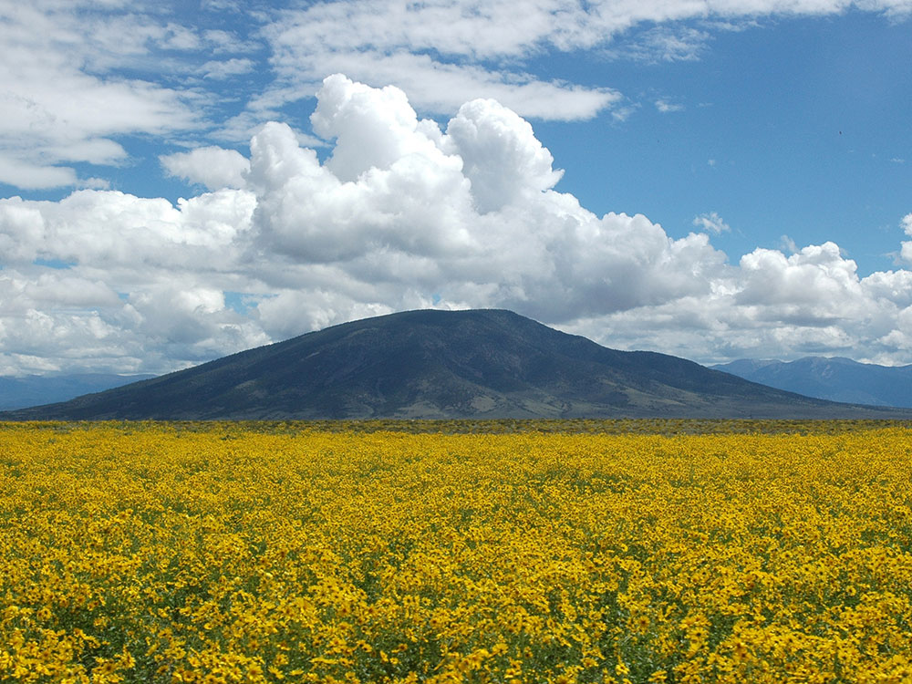
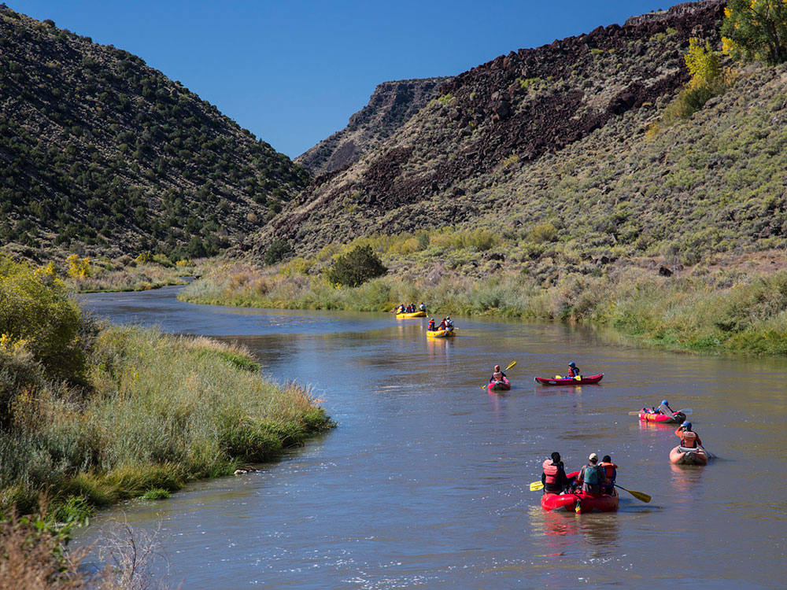
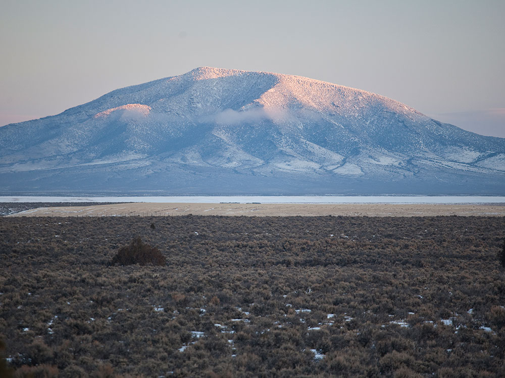
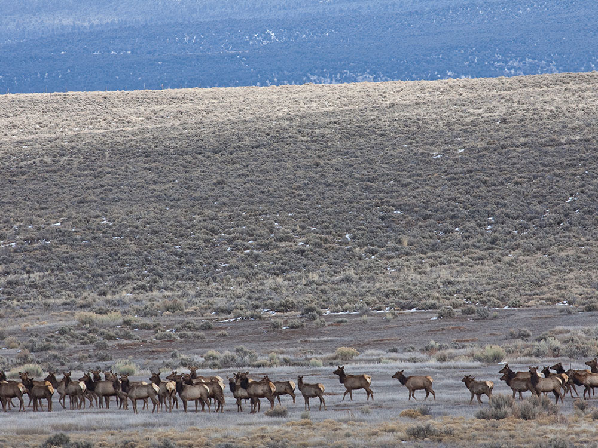

.jpg){kind=link}
Vast volcanic landscape featuring a deep river gorge, basalt cliffs, sweeping high desert plains, and ancient cultural sites shaped by centuries of natural forces and human history.
General Information
Open year-round
How to Get There
From Taos (25 mi): Take NM‑68 or NM‑522 north toward Questa and Embudo; follow signs to major recreation areas like Wild Rivers or the Rio Grande Gorge.
Overview
Rio Grande del Norte National Monument protects about 242,500 acres of high desert plateau, volcanic cones and deep canyons in northern New Mexico, centered on the Rio Grande Gorge, which drops as much as 800 feet below the Taos Plateau. President Barack Obama established the monument on March 25, 2013, to protect the river canyon, the Wild and Scenic stretch of the Red River, extinct volcanoes such as Ute Mountain and Cerro de la Olla, and a landscape rich in wildlife and archaeology. The monument is managed by the Bureau of Land Management and is home to bighorn sheep, raptors, elk and ancient petroglyphs. It is popular for whitewater rafting, fishing, camping, mountain biking and sightseeing, and for the views from the Rio Grande Gorge Bridge near Taos.
Access
The monument stretches north and west of Taos, with different recreation areas reached by car on separate roads. The Orilla Verde Recreation Area is about 15 miles south of Taos along NM-570 at Pilar, off NM-68. The Wild Rivers Recreation Area is about 30 miles north of Taos near Questa, via NM-522 and NM-378, with a paved scenic road leading to the rim and campgrounds. Many other parts of the monument are reached by dirt roads that may need high clearance, and some sections are remote with limited cell service.
Seasons
The monument is open year-round, with spring through fall the best times to visit. Whitewater rafting season generally runs from spring snowmelt in May and June through the summer, and the river is at its highest in early summer. Summers are warm in the gorge, while the higher plateau stays cooler, and afternoon thunderstorms are common. Fall brings golden cottonwoods along the river and comfortable hiking temperatures. Winters are cold, with snow at higher elevations, and some dirt roads and campgrounds may be closed or difficult to access.
Things to Do
Explore the Rio Grande Gorge and the Taos Plateau
Rio Grande del Norte National Monument blends a deep river canyon with a vast volcanic plateau. Overlooks, trails and river access areas let visitors experience both the dramatic gorge and the quiet sagebrush plains above it.
Raft, Fish and Paddle the Rio Grande
Rafting and boating on the Rio Grande range from easy Class II sections to challenging Class IV and V rapids in the Taos Box. Commercial outfitters in Taos and Pilar lead trips, and the river is also known for fishing.
Visit Wild Rivers Recreation Area
Wild Rivers is where the Red River meets the Rio Grande. Overlooks such as La Junta Point give views down into the 800-foot-deep gorge, and trails lead to the river from the rim.
Camp and Hike in Orilla Verde
The Orilla Verde Recreation Area along the river south of Taos has campgrounds, picnic areas, hiking trails and petroglyphs. It is a popular base for rafting, fishing and mountain biking.
Look for Wildlife and Volcanic Landmarks
The plateau is dotted with extinct volcanoes and provides habitat for bighorn sheep, golden eagles, elk and pronghorn. Cerro de la Olla and Ute Mountain are major landmarks.
Top Trails
West Rim Trail
Length: Approximately 9 miles one way
Elevation Gain: Minimal to moderate
Difficulty: Easy to Moderate
This rim trail runs along the edge of the gorge near Taos with long views into the canyon. It is popular with hikers and mountain bikers, and shorter segments can be done as out-and-back hikes.
Big Arsenic Springs Trail
Length: Approximately 2.5 miles round trip
Elevation Gain: Substantial (about 700 feet)
Difficulty: Moderate to Strenuous
This steep trail descends from the rim in Wild Rivers to a spring and the river at the bottom of the gorge. The climb back up is demanding, especially in summer heat.
La Junta Point Trail
Length: Approximately 0.5 miles round trip
Elevation Gain: Minimal
Difficulty: Easy
A short walk from the road leads to an overlook at the confluence of the Red River and the Rio Grande. It is an easy way to see the gorge and is good for photography.
Visitor Centers
The BLM operates two main visitor facilities: the Rio Grande Gorge Visitor Center in Pilar, at the Orilla Verde Recreation Area, and the Wild Rivers Visitor Center near Questa. Both have exhibits on the geology, wildlife and human history of the gorge, maps, restrooms and staff or volunteers who can recommend trails and river access. Hours are seasonal and may be limited in winter, so check the BLM website for current information. Day-use fees may apply at developed recreation areas.
Camping and Lodging
Developed campgrounds are available in both recreation areas, including several riverside sites in Orilla Verde and campgrounds along the rim at Wild Rivers, such as La Junta and Big Arsenic, and dispersed camping is allowed in many other areas of BLM land. Hotels, inns, vacation rentals and restaurants are plentiful in Taos, about 30 to 45 minutes away, and there are smaller options in Questa, Red River and Angel Fire. Check each property's website for current availability.
The monument includes portions of the Taos Plateau volcanic field, cut by the gorges of the Rio Grande and the Rio San Antonio. Significant volcanic peaks include Cerro de la Olla, Cerro Chiflo, and Ute Mountain which, at 10,093 feet (3,076 m) ft, is the tallest peak entirely within the national monument. San Antonio Mountain, which at 10,908 feet (3,325 m) is the tallest peak in the volcanic field, is only partially within the bounds of the monument. The volcanoes and the rhyolite-basalt plateau, as well as the course of the Rio Grande, are the result of spreading along the Rio Grande rift, that transects north-south from Colorado to Mexico. Large springs, some of them hot, are believed to be the outflow from flooded lava tube systems. Ecosystems vary from willow and cottonwood stands along the rivers to sagebrush plains on the plateau, transitioning to pinyon pine in the hills and ponderosa pine and Douglas-fir in the mountains. The monument provides habitat for a variety of resident and migrant birds. Large mammals include elk, mule deer, pronghorn and bighorn sheep, as well as predators such as cougar, bobcat, river otters, black bears and coyotes. The plateau provides winter range for many of the larger grazing animals.
History
The valley of the Rio Grande has been inhabited at least to the Archaic period, as evidenced by petroglyphs on exposed rock surfaces, and by the remains of stone tools quarried in the mountains. San Antonio Mountain was a significant source of dacite for tools. Other artifacts include potsherds, projectile points and the remains of pit houses. In historic times the Jicarilla Apache and Utes, as well as the peoples of Taos Pueblo and Picuris Pueblo have inhabited the area. Settlement in the area was not successful, leaving the abandoned remains of early 20th century homesteads, mainly in the area of Cerro Montoso.
Activities
Rafting and boating through the Rio Grande Gorge is a popular activity. Rapids vary between Class II and Class V. Rafting and boating trips are available from commercial outfitters. Mountain biking is permitted on designated trails and roads. Off-highway vehicles are permitted on designated roads. A number of paved highways cross the monument, including the Wild Rivers Backcountry Byway, New Mexico Highway 570, and U.S. Routes 64 and 285. Route 64 crosses the Rio Grande Gorge on the 660-foot (200 m) high Rio Grande Gorge Bridge. Fishing for brown and rainbow trout and northern pike is available on the Red River and the Rio Grande, subject to New Mexico regulations. Hunting is also permitted in the monument, subject to game regulations. There are five campgrounds located within the monument, one in the river gorge.
This article uses material from the Wikipedia article and official pages for Rio Grande del Norte National Monument, AllTrails Guide, Taos Chamber of Commerce, New Mexico Nomad, Travel.com Guide, released under the Creative Commons Attribution-Share-Alike License 3.0. Additional information from the Bureau of Land Management.
Featured Trails
#Placeholder, #License, via Wikimedia Commons; Image Size Adjusted
Rio Grande Gorge West Rim Trail
Difficulty: Easy
Cliffside trail along the rim of the gorge with sweeping views of the Rio Grande far below
#Placeholder, #License, via Wikimedia Commons; Image Size Adjusted
Big Arsenic Springs Trail
Difficulty: Moderate
Steep switchback trail descending into the canyon with river access and possible petroglyph sights
#Placeholder, #License, via Wikimedia Commons; Image Size Adjusted
The Slide Trail
Difficulty: Moderate
Classic route climbing between the canyon floor and rim with dramatic elevation change and views
#Placeholder, #License, via Wikimedia Commons; Image Size Adjusted
La Vista Verde Trail
Difficulty: Easy
Scenic and relatively flat trail with great views of the gorge and surrounding desert landscape
#Placeholder, #License, via Wikimedia Commons; Image Size Adjusted
Black Rock Hot Springs Trail
Difficulty: Easy
Short walk to a riverside hot spring with relaxing views of the Rio Grande and canyon walls







.jpg){kind=link}

.jpg){kind=link}

.jpg){kind=link}

.jpg){kind=link}